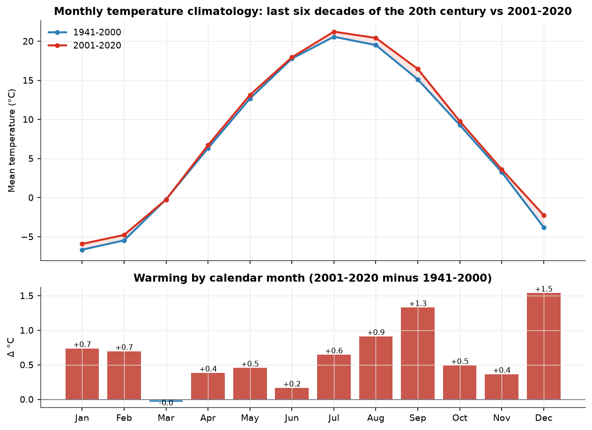
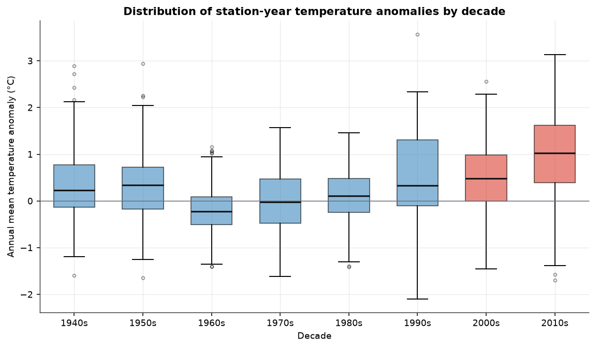
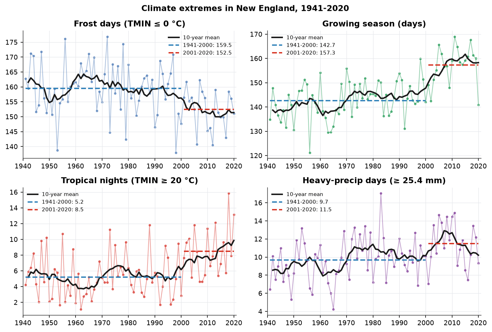
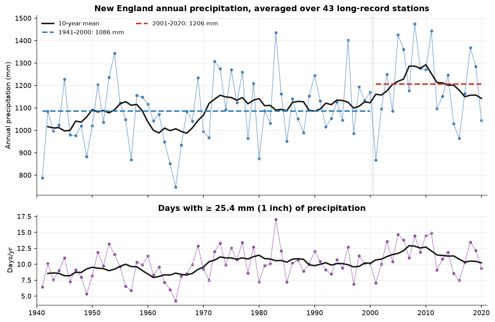
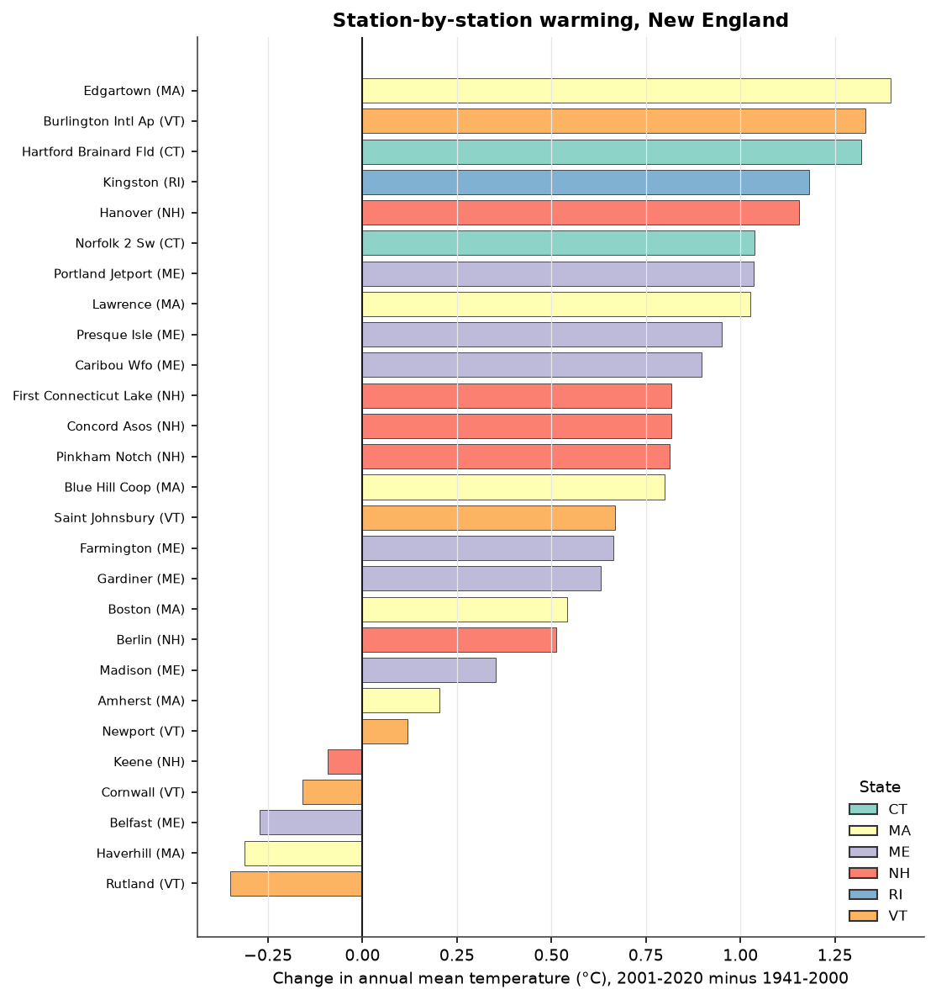
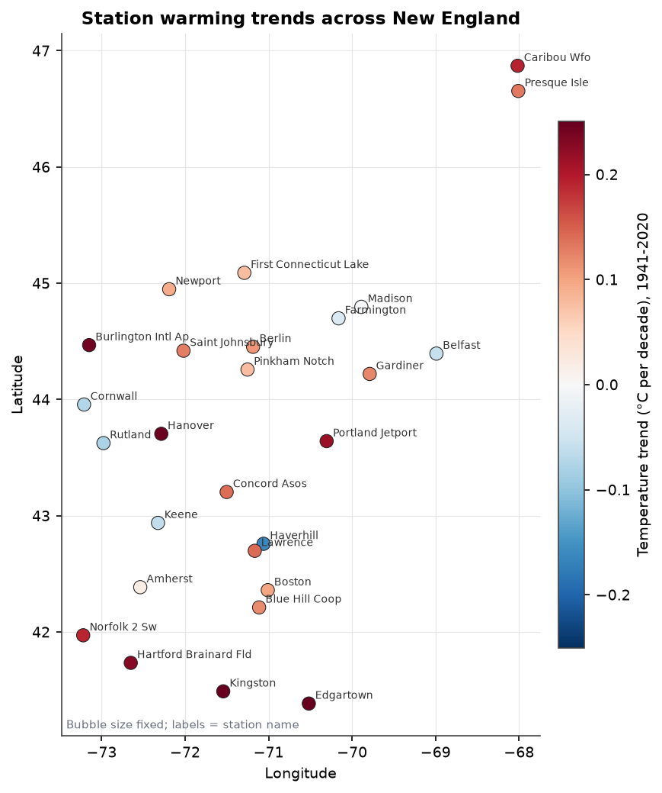

The short version
New England warmed by about six-tenths of a degree between the two eras, but the change is not spread evenly across the day, the year or the map.
The first two decades of the 21st century averaged 8.07 °C, compared with 7.44 °C for 1941–2000 — a +0.62 °C shift. Across the full 80-year record the trend is +0.096 °C per decade, and the 2010s were the warmest decade in the dataset (+0.96 °C above the 1961–1990 baseline), while the 1960s were the coldest (−0.18 °C).
The warming is lopsided. Minimum temperatures rose 0.90 °C but maximum temperatures only 0.36 °C, narrowing the average daily range by half a degree. Winter and autumn warmed more than spring, December and September warmed far more than March, and the frost-free season gained about two weeks. Precipitation rose at every station, with the largest relative increase in the heaviest events.
Twenty of 27 temperature stations warmed; 18 of those trends are statistically significant. The signal is strongest along the southern coast and weakest in interior Vermont — a pattern consistent with warming nights and a shorter cold season rather than with hotter summer afternoons.
The clearest signal is not hotter afternoons. It is warmer nights, a longer frost-free season, and more rain arriving in heavy events. Headline finding
Why these periods?
The 20th century runs from 1901 to 2000, so its last six decades are 1941–2000. The 21st century's first two decades are 2001–2020. Both eras are compared against the 1961–1990 baseline, the WMO reference period that sits inside the earlier era.
Temperature
Eighty years of annual anomalies, and the seasonal shape of the change. Use the buttons to compare mean, maximum, minimum and daily range.
Annual temperature anomaly
Relative to the 1961–1990 average, °C
Bars: individual years. Black line: 10-year running mean. Dashed lines: era averages. Static figure (PNG)

Decade by decade
Regional anomaly and selected indices, averaged over all reporting stations.
| Decade | Anomaly (°C) | Frost days | Growing season (d) | Tropical nights | Precipitation (mm) | Heavy days |
|---|
Nights are warming fastest
Minimum temperature rose 0.90 °C between the eras, about 2.5 times the 0.36 °C rise in maximum temperature. The diurnal range fell 0.53 °C (p < 0.001). In winter, the split is almost total: December–February minima warmed 1.37 °C while winter maxima barely moved (+0.09 °C).
Winter and autumn moved most
Seasonal warming was +1.00 °C in winter and +0.71 °C in autumn, versus +0.58 °C in summer and +0.26 °C in spring. December (+1.54 °C) and September (+1.33 °C) changed the most of any month; March did not warm at all (−0.04 °C).


Extremes and the growing season
The most visible consequences show up at the cold end of the distribution and in the length of the frost-free season.

- Frost days: 159.5 → 152.5 per year (−7.0, p < 0.001).
- Growing season: 142.7 → 157.3 days (+14.7, p < 0.001). The last spring frost arrived about 5 days earlier and the first autumn frost about 9 days later. Every station lengthened its season.
- Tropical nights (minimum ≥ 20 °C): 5.2 → 8.5 per year (+3.3), the largest relative change of any index.
- Summer days (maximum ≥ 25 °C): 70.7 → 76.0 (+5.3, p = 0.001).
What did not change much: daytime heat
Days at or above 30 °C rose by only about one per year (18.3 → 19.4) and the change is not statistically significant (p = 0.20). Days at or above 90 °F show no trend at all. Hot-day counts are dominated by rare heat waves, so they are noisy — but the robust signal here is warm nights, not extreme afternoon heat.
Water
The region is wetter, and the increase is weighted toward the heaviest events.

A wetter regime
Annual precipitation increased by 120 mm (+11 %), from 1086 mm to 1206 mm. All 43 long-record precipitation stations recorded an increase (median +124 mm), and the regional trend is +25.6 mm per decade (p = 0.0005).
More of it in downpours
Wet days (≥ 1 mm) rose only 5 %, from 106.8 to 112.6 per year, while days with ≥ 25.4 mm rose 19 %, from 9.7 to 11.5. The wettest day of the year also grew, from 66.7 mm to 71.6 mm. The extra water is arriving in heavier events rather than in more drizzly days.
Read with care
Precipitation trends are the most instrument-sensitive part of this analysis. Gauge changes — especially the shift from manual gauges to tipping buckets and changes in wind exposure — can inflate apparent increases in heavy events. The direction agrees with regional climate assessments, but the exact +11 % should be checked against gridded datasets before being treated as a pure climate signal.
Where the warming is strongest
The south coast warmed roughly three times as much as interior Vermont, though small states rest on only one or two stations.


By state
Mean of the station era differences within each state.
| State | Stations | 1941–2000 (°C) | 2001–2020 (°C) | Change (°C) | Stations warmer |
|---|
Southern and coastal stations warmed most: Edgartown on Martha's Vineyard (+1.35 °C), Kingston, Rhode Island (+1.18 °C), Hartford (+1.18 °C) and Burlington (+1.29 °C). Interior Vermont warmed least (state average +0.32 °C). The gradient fits a pattern of warmer nights and fewer cold outbreaks rather than stronger summer heating.
One station runs against the regional grain: Haverhill, Massachusetts shows a significant cooling trend (−0.16 °C per decade). GHCNd does not correct for station moves or instrument changes, so a single-site trend like this is more likely to reflect a local record discontinuity than a cool island in a warming region. It is a useful reminder of why the analysis uses many stations.
Every indicator
The full comparison, the robustness checks, and the caveats that come with station data.
Era comparison
Equal-weight station means; p-values from a Wilcoxon signed-rank test on paired per-station era means.
| Indicator | 1941–2000 | 2001–2020 | Change | Stations increasing | p-value |
|---|
Bold changes are statistically significant at p < 0.05.
Does the result depend on the station rules?
Recomputing the warming with different completeness thresholds.
| Selection rule | Stations | Mean Δ (°C) | Median Δ (°C) | Stations warmer |
|---|
Caveats
Not homogenized. Station moves, instrument changes and land use are not corrected in GHCNd. Twenty years is a short era. The difference in means is robust in sign and significance, but its size is uncertain by roughly ±0.2 °C. Equal station weighting, not area weighting. Coastal and low-elevation sites are over-represented relative to the land area. Snowfall is noisy and shows no long-term trend.
Methods and data
Everything here is generated by a small, reproducible Python pipeline.
- Dataset
- NOAA NCEI Global Historical Climatology Network daily (GHCNd),
version
3.35-upd-2026111517 - Region
- Connecticut, Rhode Island, Massachusetts, Vermont, New Hampshire, Maine
- Stations downloaded
- 94 station files, selected from the GHCNd inventory for records spanning both eras
- Temperature stations
- 27, each with ≥ 50 of 60 valid years in 1941–2000 and ≥ 16 of 20 in 2001–2020
- Precipitation stations
- 43 with the same rule
- Daily completeness
- A station-year needs ≥ 330 valid days (~90 %) to enter the analysis
- Aggregation
- Per-station anomalies against 1961–1990, then equal-weight station averages
- Significance
- Wilcoxon signed-rank test on paired station era means; OLS and Sen slopes for trends
- Quality control
- Values carrying a non-blank GHCNd quality flag are excluded
The pipeline
- Select candidate stations from the metadata and inventory files.
- Download each station's
.dlyfile (cached locally). - Parse the fixed-width records into one tidy table of 9.93 million values.
- Build station-year climate indices and era statistics.
- Generate figures, tables and this page.
pip install -r requirements.txt
python src/run_all.pyDownloads
The derived tables behind this page are available as CSV, and the full write-up is in the repository.
Figures are generated with matplotlib at 150 dpi and are available in
output/figures/.